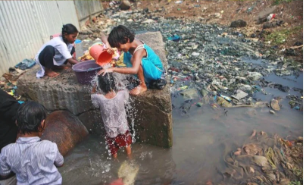
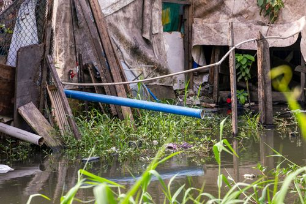
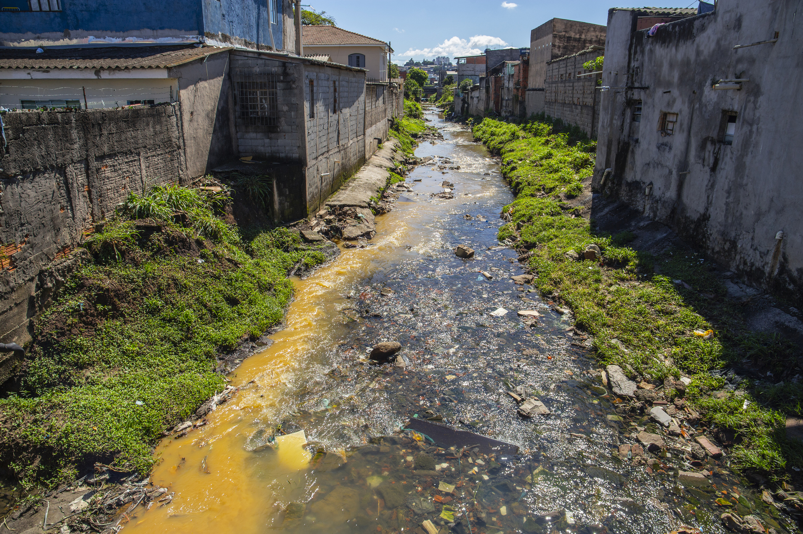

O saneamento básico é fundamental para uma melhor qualidade de vida, saúde e desenvolvimento humano, onde países como por exemplo africanos, Índia e entre outros Estados. Essa ausência de um saneamento adequado, faz com que essas nações apresentem grandes indíces de doenças, mortes e o IDH(Indice de Desenvolvimento Humano) muito baixo.

No Brasil o Sanemento Básico atingiu a cobertura de 62,5% dos imóveis e o abastecimento de água tratada em torno de 83,1%, mesmo com tamanho avanço, pode se contemplar ainda que 49 milhões de pessoas não tem o acesso adequado.


Em Ribeirão Preto pode se comtemplar um amplo acesso a água de excelente qualidade e uma boa infraestrutura de saneamento básico, onde a cobertura de saneamento chega a 99,72% e a entrega de água tratada em 99,73%, mas durante o dia-a-dia o cidadão contempla em vários lugares de sua cidade vazamentos de água, bueiros entopidos, vazamento de esgoto e água parada a qual pode ser um grande bersário para as larvas do mosquito Aedes aegypti.